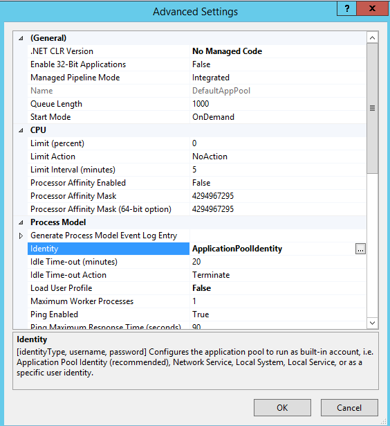

Application Pools¶
When hosting multiple web sites on a single server, you should consider isolating the applications from each other by running each application in its own application pool. This document provides an overview of how to set up Application Pools to securely host multiple web sites on a single server.
Application Pool Identity Account¶
An application pool identity account allows you to run an application under a unique account without having to create and manage domains or local accounts. On IIS 8.0+ the IIS Admin Worker Process (WAS) will create a virtual account with the name of the new application pool and run the application pool’s worker processes under this account by default.
Configuring IIS Application Pool Identities¶
In the IIS Management Console, under Advanced Settings for your application pool ensure that Identity list item is set to use ApplicationPoolIdentity as shown in the image below.
Securing Resources¶
The IIS management process creates a secure identifier with the name of the application pool in the Windows Security System. Resources can be secured by using this identity, however this identity is not a real user account and will not show up in the Windows User Management Console.
To grant the IIS worker process access to your application, you will need to modify the Access Control List (ACL) for the the directory containing your application.
- Open Windows Explorer and navigate to the directory.
- Right click on the directory and click properties.
- Under the Security tab, click the Edit button and then the Add button
- Click the Locations and make sure you select your server.
- Enter IIS AppPool\DefaultAppPool in Enter the object names to select textbox.
- Click the Check Names button and then click OK.
You can also do this via the command-line by using ICACLS tool.
ICACLS C:\sites\MyWebApp /grant "IIS AppPool\DefaultAppPool" :F